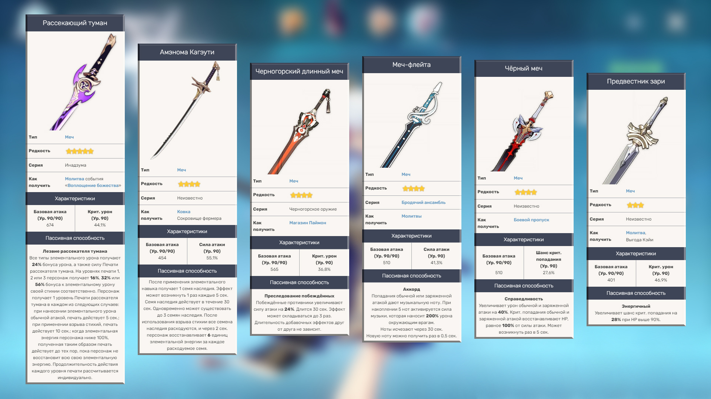

Камисато Аяка – принцесса известного рода из Инадзумы. Унаследовав власть вместе со своим братом Аято, девушка несет ответственность за внутренние дела клана и налаживает общественные отношения. Как игровой персонаж, является 5⭐ Крио мечницей, которая зарекомендовала себя как отличный дамагер.
Сразу обозначим, что все пятизвёздочные мечи будут хорошим выбором для Аяки, но самым лучшим является новый — Рассекающий туман. Огромный базовый урон, много крит. урона и великолепная пассивка.
Черногорский длинный меч будет лучшим «фиолетовым» оружием за счёт огромного показателя базового урона, хорошего бонуса крит. урона, отличной пассивки и относительной доступности (берётся из магазина Паймон за Звёздный блеск).
Меч-флейта — меч из гачи, средняя базовая атака которого компенсируется бонусом к силе атаки и пассивкой. Высокая скорость атак атаки Аяки сможет часто активировать пассивку меча, которая наносит 100-200% урона окружающим врагам. Хороший выбор.
Чёрный меч — меч из боевого пропуска, который добавит шанса крита, поэтому на артефактах можно будет собрать побольше крит. урона. Пассивка увеличит урон от обычной и заряженной атаки и раз в 5 секунд отхилит вас на процент от силы атаки.
Амэнома Кагэути — новый крафтовый меч из Инадзумы, который отлично подойдёт Аяке. Невысокий базовый урон компенсируется силой атаки, а пассивка поможет решить проблему с энергией для ульты Аяки: она даёт 18 энергии даже на первом Возвышении
Предвестник зари — трёхзвёздочный меч, отлично подходит новичкам; на пятом возвышении даёт море крит. урона и шанса крита.
Если вы собираетесь использовать Аяку в группе, нацеленной на постоянную заморозку противника, то лучше сета, чем Заблудший в метели, не найти. Помимо +15% боуса к Крио урону, четыре куска этого сета дают ещё и +20% шанса крита по врагам под статусом Крио (а Аяка будет постоянно его накладывать). Более того, ещё +20% шанса крита вам дадут удары по замороженным целям. Таким образом, с полным сетом Аяке будет хватать всего около 30% «своего» шанса крита (с полным бонусом сета он вырастет до оптимальных 70%). Благодаря этому можно собрать гигантский крит. урон с оружия и/или артефактов.
Возможны и гибридные сборки. Если взять 2х Заблудшего в метели и 2х Церемонии древней знати, получите бонус +15% Крио урона и +20% урона ульты, что тоже впечатляюще повысит урон и избавит вас от необходимости постоянно всех замораживать. Этот вариант больше подходит для Аяки в роли второго дамагера.
Для Аяки в роли основного дамагера есть другой гибридный вариант. 2х Заблудшего в метели и 2х Гладиатора или Воспоминания Симэнавы дадут +15% Крио урона и +18% силы атаки. Эмблема рассечённой судьбы — новый сет Инадзумы, который увеличивает восстановление энергии на 20%, а также повышает урон ульты на 30% от восстановления энергии персонажа — максимум до 75%. Подойдёт для групп с быстрой сменой персонажей, а также если вы не собираетесь использовать Аяку как основного дамагера и у вас не будет для неё «батарейки». Этот сет подходит только для Аяки в роли второго дамагера, поэтому для него качаем в первую очередь ульту.
Воспоминания Симэнавы — второй из недавно вышедших сетов. На момент выхода статьи ведутся тесты и подсчёты его эффективности, однако уже можно описать его плюсы для Аяки. Два куска будут давать ей +18% силы атаки. А четыре куска дают следующий эффект: при использовании элементального навыка, если у персонажа 15 или более единиц энергии, он теряет 15 единиц энергии, а урон обычной атаки, заряженной атаки и атаки в падении увеличивается на 50% в течение 10 сек. На первый взгляд может показаться, что сет не подходит Аяке, ведь ей не будет хватать энергии на зарядку ульты. Но на самом деле вы просто будете жертвовать элементальными частицами от «ешки» в пользу увеличения урона основных атак — причём очень неплохого увеличения. У «ешки» Аяки относительно длинный откат длиной в 10 сек, поэтому спамить её слишком часто вы не будете в любом случае — а значит, энергия будет сливаться не слишком быстро. Но «батарейка» в команде понадобится обязательно. Сет подходит только для Аяки в роли основного дамагера; при этом качаем основные атаки.